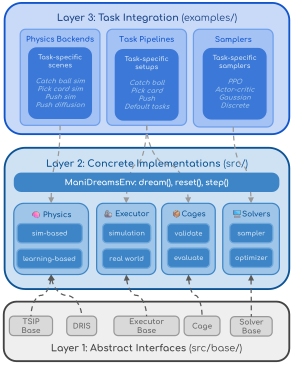

Why ManiDreams?#
ManiDreams is a modular framework for cage-constrained robotic manipulation. It implements a planning paradigm where a virtual spatial constraint (cage) bounds a Domain-Randomized Instance Set (DRIS) to prevent divergence during action selection. The same algorithm can be applied across different manipulation tasks, physics backends, and solver strategies without modifying the core pipeline.
Three-Layer Architecture#
ManiDreams follows a three-layer modular architecture that separates abstract interfaces from concrete implementations and task-specific integrations:
{kind=link}

Layer 1 — Abstract Interfaces (
src/manidreams/base/): Task-agnostic contracts — DRIS, TSIPBase, Cage, SolverBase, ExecutorBase. These define the data flow between components.Layer 2 — Concrete Implementations (
src/manidreams/): Reusable algorithm implementations — CircularCage, MPPIOptimizer, SimulationBasedTSIP, etc. Plug-and-play across tasks.Layer 3 — Task Integration (
examples/): Task-specific wiring — physics backends, trained policies, executors, and main scripts that assemble Layer 2 components.
General Pipeline#
At each timestep, ManiDreams executes a simple loop inside ManiDreamsEnv.dream():
for t = 0, 1, ..., T-1:
1. Update cage parameters (time-varying constraints)
2. Generate N candidate actions (solver)
3. Predict outcomes in parallel (TSIP)
4. Evaluate costs + validate constraints (cage)
5. Select and execute the best valid action
This pipeline is the same regardless of whether the task uses a physics simulator or a learned world model, a discrete or continuous action space, or a policy-based or optimization-based solver.
Design Principles#
Modularity: Any cage can work with any solver and any TSIP backend. The abstract interfaces enforce clean separation.
Executor independence: Executors create their own simulation environments, completely decoupled from the planning TSIP. This prevents information leakage and facilitates sim-to-real transfer.
Dual-mode operation: Every task supports both baseline (direct policy) and CAGE (parallel evaluation) modes via the same codebase. Switching between modes requires only changing
num_samples.Backend interchangeability: The same cage and solver pipeline works with both simulation-based (exact physics) and learning-based (approximate world model) TSIP backends.
Inference-only policies: The
examples/samplers/directory contains only inference code and pre-trained checkpoints. Training is handled externally, and the framework consumes trained policies through thePolicySamplerinterface.
ManiDreamsEnv#
ManiDreamsEnv (src/manidreams/env.py) is the Gym-compatible unified interface that wraps TSIP, Cage, and Solver into a standard reset()/step() API. Its dream() method implements the full cage-constrained algorithm loop.
class ManiDreamsEnv(gym.Env):
def __init__(self, tsip, action_space, solver=None, cage=None,
max_timesteps=1000, observation_space=None)
def reset(seed=None, options=None) -> Tuple[DRIS, Dict]
def step(action) -> Tuple[DRIS, float, bool, bool, Dict]
def dream(horizon, cage=None, solver=None,
start_timestep=0, verbose=True)
-> Tuple[List[DRIS], List[Any], List[Any]]
def initialize_dris(state_space, initial_dris, context_space=None)
Directory Structure#
src/manidreams/ # Core package (Layer 1 + Layer 2)
├── __init__.py # Package exports
├── env.py # ManiDreamsEnv: Gym-compatible unified interface
├── base/ # Layer 1: Abstract interfaces
│ ├── dris.py # DRIS dataclass, ContextSpace
│ ├── tsip.py # TSIPBase abstract class
│ ├── cage.py # Cage abstract class, CageController
│ ├── solver.py # SolverBase abstract class
│ └── executor.py # ExecutorBase abstract class
├── cages/ # Layer 2: Cage constraint implementations
│ ├── geometric.py # CircularCage (2D orbital)
│ ├── geometric3d.py # Geometric3DCage (3D trajectory)
│ ├── plate_cage.py # PlateCage (catching)
│ ├── dris_cage.py # DRISCage (uncertainty-aware)
│ ├── pixel_cage.py # CircularPixelCage (image-based)
│ ├── custom_trajectory_cage.py # CustomTrajectoryCage
│ └── utils.py # Shared cage utilities
├── solvers/ # Layer 2: Solver implementations
│ ├── samplers/ # Policy-based action sampling
│ │ ├── base.py # SamplerBase (ABC)
│ │ ├── discrete.py # DiscreteSampler
│ │ ├── gaussian.py # GaussianSampler
│ │ └── policy_sampler.py # PolicySampler (baseline + CAGE)
│ └── optimizers/ # Planning-based optimization
│ ├── optimizer.py # MPCOptimizer (base MPC)
│ ├── geometric_optimizer.py # GeometricOptimizer (discrete enumeration)
│ ├── mppi_optimizer.py # MPPIOptimizer (CEM/MPPI continuous)
│ ├── naive_optimizer.py # NaiveOptimizer (angle heuristic)
│ └── pixel_optimizer.py # PixelOptimizer (image-space)
├── physics/ # Layer 2: TSIP implementations
│ ├── simulation_tsip.py # SimulationBasedTSIP + SimulationBackend
│ └── learned_tsip.py # LearningBasedTSIP + LearnedBackend
└── executors/ # Layer 2: Action execution
├── simulation_executor.py # SimulationExecutor
└── real_executor.py # RealWorldExecutor (abstract)
examples/ # Layer 3: Task-specific integration
├── physics/ # Task-specific physics backends
├── samplers/ # Trained policies (inference only)
├── tasks/ # Task pipelines (main scripts)
└── executors/ # Independent task executors